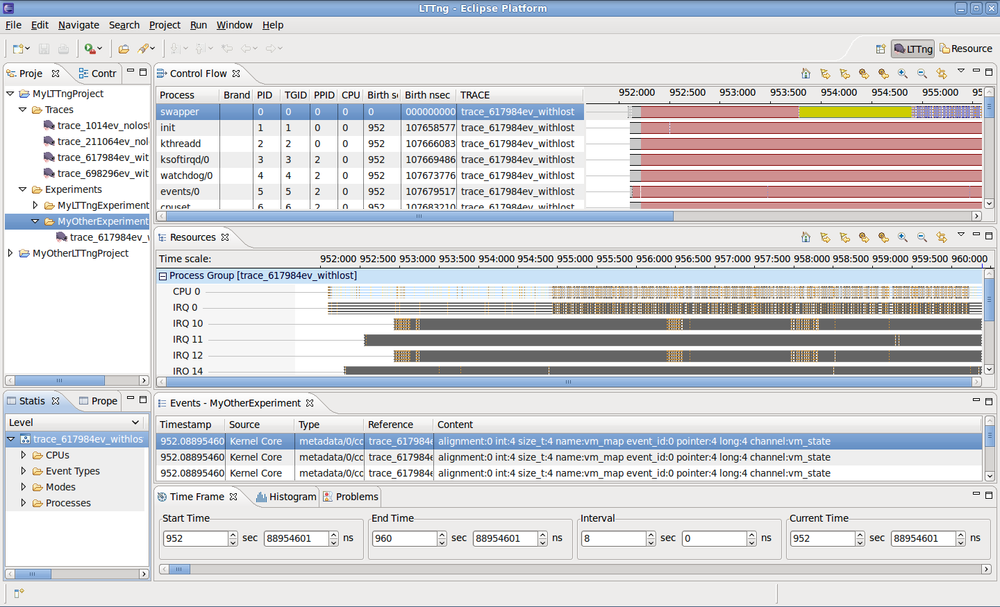

The screenshot below shows the LTTng perspective. It holds the following specific views:
The analysis views are synchronized i.e. selecting a raw event, a timestamp, etc, will position the other views accordingly.
